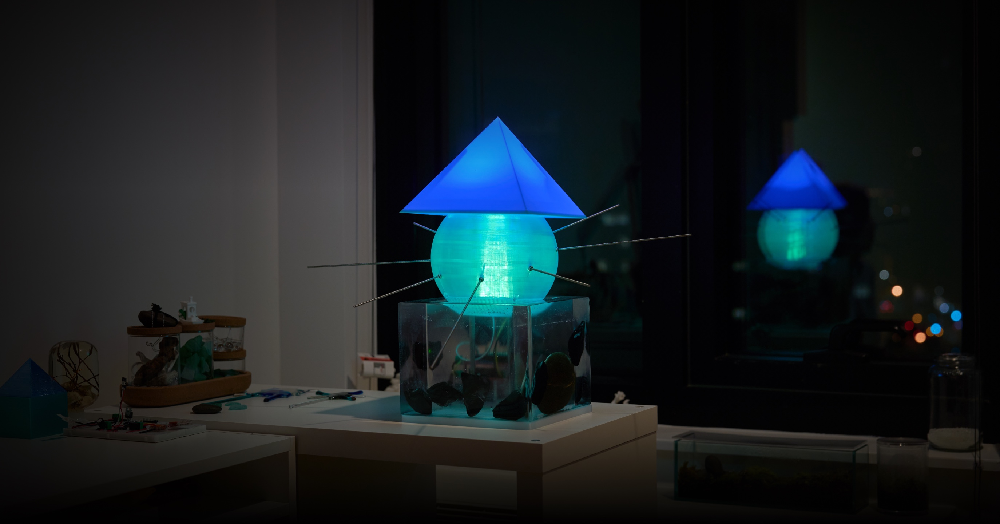

PROBLEM
관객의 정형화되지 않은 반응을 해석하면서도 물리 조명이 안전하고 일관되게 반응해야 했습니다.
CASE STUDY / 03 · INTERACTIVE SYSTEMS
사람의 몸·표정·목소리로 드러나는 관객의 자유로운 반응을 해석하되, 결과는 허용된 빛의 토큰으로만 변환해 LED·UV 조명과 물리 장치에서 일관되고 안전하게 표현되도록 설계했습니다.

AT A GLANCE
관객의 정형화되지 않은 반응을 해석하면서도 물리 조명이 안전하고 일관되게 반응해야 했습니다.
입력 해석과 하드웨어 제어 사이에 제한된 JSON 빛 토큰이라는 검증 가능한 경계를 뒀습니다.
인식·음성 입력, 상태 기계, token validation, simulator, 물리 장치 출력까지 구현했습니다.
관객 반응 → 제어된 빛서로 다른 반응 경로와 장비 조건을 하나의 출력 구조로 연결
01 CONTEXT & PROBLEMS
Lumenar Series는 관객과 대화하거나 관객의 상태를 바라보는 존재를 빛으로 표현하는 작업입니다. Lumemaru는 카메라로 관객의 몸과 표정을 보고, Luminaru는 관객의 목소리를 듣습니다. 두 작품은 서로 다른 입력을 받지만, 최종적으로는 하나의 빛의 언어를 통해 반응을 보여줘야 했습니다.
여기서 AI 모델의 자연어 출력을 그대로 물리 장치에 연결할 수는 없습니다. 관객의 행동과 발화는 모호하고 예측하기 어렵고, VLM·LLM의 출력도 형식이 잘못되거나 같은 반응을 반복할 수 있습니다. 반면 조명 장치에는 정해진 색·밝기·패턴·속도와 같은 제어 가능한 값만 전달되어야 합니다.
따라서 핵심은 더 자유로운 AI 출력을 만드는 일이 아니라, 관객의 자유로운 반응과 제한된 물리 출력을 안정적으로 연결하는 경계를 만드는 일이었습니다.
관객의 몸·표정·음성처럼 정형화되지 않은 입력을 AI로 해석하면서도, 생성 모델의 결과가 물리 조명 장치에서 안전하고 일관되며 전시 환경에서 멈추지 않는 반응으로 이어지게 하려면 어떻게 해야 하는가?
여러 사람, 표정·자세 변화, 소음과 발화 방식 등 상호작용의 시작점이 불확실합니다.
잘못된 형식이나 반복된 반응이 조명 장치로 전달되어서는 안 됩니다.
Mac mini와 Raspberry Pi는 연산 여유와 모델 실행 전략이 다릅니다.
02 SYSTEM APPROACH
AI가 관객을 해석하는 과정과 조명 장치를 제어하는 과정을 하나의 블랙박스로 묶지 않았습니다. 두 단계 사이에 작고 제한된 빛의 언어를 뒀습니다.
이 경계 덕분에 인식 모델이나 언어 모델을 바꾸더라도 조명 제어의 안전성과 표현 규칙을 독립적으로 유지할 수 있습니다. 반대로 하드웨어 경로가 달라져도, 상위의 빛 토큰은 그대로 사용할 수 있습니다.
flowchart TB
subgraph Vision["Lumemaru · 시각 입력"]
Camera["카메라"] --> Perception["포즈 · 얼굴 · 표정"]
Perception --> State["상호작용 상태"]
State --> LocalVLM["로컬 VLM"]
end
subgraph Voice["Luminaru · 음성 입력"]
Microphone["마이크"] --> Speech["STT"]
Speech --> OnlineLLM["온라인 LLM"]
end
LocalVLM --> Token["JSON 빛 토큰 파싱 및 검증"]
OnlineLLM --> Token
Token --> Renderer["LED / UV 렌더러"]
Renderer --> Output{"장치별 출력 경로"}
Output --> Web["웹 시뮬레이터"]
Output --> Arduino["Arduino 직렬 통신"]
Output --> RaspberryPi["Raspberry Pi"]Lumemaru는 YOLO 기반 사람·포즈 추적과 ByteTrack, MediaPipe FaceLandmarker, DeepFace를 이용해 카메라 앞 관객의 상태를 파악했습니다. 매 프레임마다 모델을 호출하는 대신, idle → calling → engaged → await_retrigger 상태 기계로 관객을 찾고, 반응하고, 재호출을 기다리는 흐름을 명시했습니다.
상태가 정해진 뒤 로컬 VLM이 관객에 대한 해석을 만들고, 이 결과는 빛 토큰으로 변환되어 조명 렌더러로 전달됩니다. 상태 기계는 인식 결과의 흔들림을 완전히 없애는 장치가 아니라, 언제 AI를 호출하고 언제 같은 관객에 대한 반응을 마무리할지 정하는 상호작용의 경계입니다.
프롬프트는 모델에게 관객을 자유로운 문장으로 평가하게 하는 지시문이 아니었습니다. 카메라 이미지와 애플리케이션이 이미 판단한 관객·상호작용 상태를 함께 전달하되, VLM은 지정된 Light Library의 단어만 사용하도록 제한했습니다. 모델의 역할은 설명문을 만드는 것이 아니라 관객에 대한 해석을 you, protect, warm, be okay, safe 같은 빛의 어휘에서 고르는 일이었습니다.
응답 계약도 짧은 JSON 형식으로 정했습니다. 예를 들어 {"lt":[{"e":"you","x":"#FF6D00"},{"e":"warm","x":"#FFB300"}]}처럼 토큰과 색상만 반환하게 해, 이후 렌더링 단계가 해석할 수 있는 형태를 미리 정했습니다.
프롬프트만으로 형식 준수를 보장하지는 않았습니다. 응답에서 JSON 영역을 다시 찾아 파싱하고, 형식이 깨졌을 때는 안전한 기본 시퀀스로 대체했으며, 최근 사용한 토큰과 겹치면 다른 토큰으로 바꾸는 애플리케이션 규칙을 함께 뒀습니다. 프롬프트의 역할과 실행 중 검증의 역할을 분리해, 모델의 표현 가능성과 전시에서 필요한 재현성을 함께 다뤘습니다.
Luminaru는 STT와 루미나루 호출어를 통해 음성 입력을 시작합니다. 작은 Raspberry Pi에서 로컬 LLM을 무리하게 실행하지 않고, 온라인 LLM API로 해석을 요청했습니다. 그 결과는 시각 작품과 같은 빛 토큰 규칙을 거쳐 출력됩니다.
입력 방식과 모델 실행 위치는 달라도, 조명 표현과 하드웨어 제어는 공통 구조로 유지했습니다.
모델이 만든 결과는 허용된 토큰 집합과 형식을 확인한 뒤에만 렌더러로 전달했습니다. 잘못된 형식이나 허용되지 않은 값은 안전한 기본 반응으로 대체하고, 직전 반응과 같은 토큰이 이어지면 반복을 막는 규칙을 적용했습니다.
이 단계는 AI의 응답을 검열하기 위한 장치가 아니라, 생성된 의미를 작품이 실제로 표현할 수 있는 동작으로 번역하는 과정입니다.
FastAPI 기반 시뮬레이터와 상태 확인 경로를 두어, 물리 장치가 없어도 렌더링과 제어 흐름을 확인할 수 있게 했습니다. 실제 장치에서는 Arduino 직렬 통신을 다루거나, Raspberry Pi의 SPI/PWM 출력으로 LED·UV 조명을 제어했습니다.
03 CONTRIBUTION & OUTCOME
두 작품의 입력과 추론 경로는 달랐지만, 빛 토큰·렌더링·하드웨어 제어라는 공통 출력 구조를 구현했습니다. 각 장비의 연산 조건에 맞는 모델 실행 방식을 선택하면서도, 관객에게는 하나의 빛의 언어로 반응이 이어지게 했습니다.
시각과 음성이라는 서로 다른 관객 반응을 공통 렌더링 구조로 연결
허용된 토큰·검증·안전한 기본 반응·반복 방지로 모델의 응답이 직접 장치 명령이 되지 않도록 설계
Mac mini의 로컬 VLM과 Raspberry Pi의 온라인 LLM 경로를 같은 빛 토큰 규칙과 출력 구조 위에서 구현